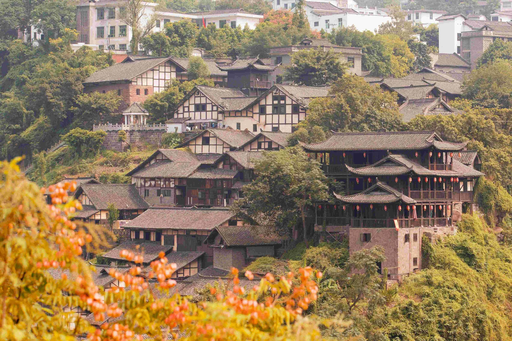
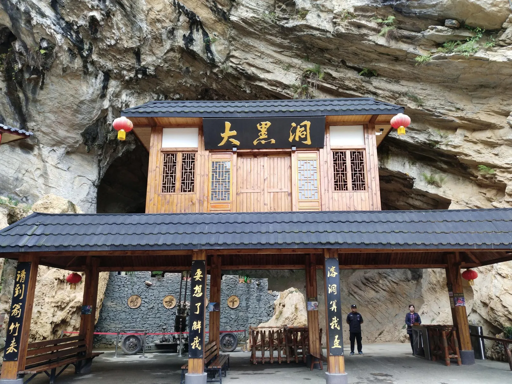
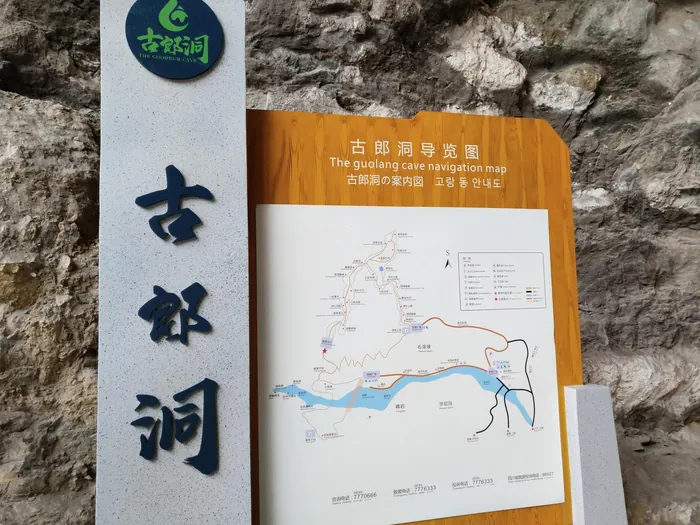
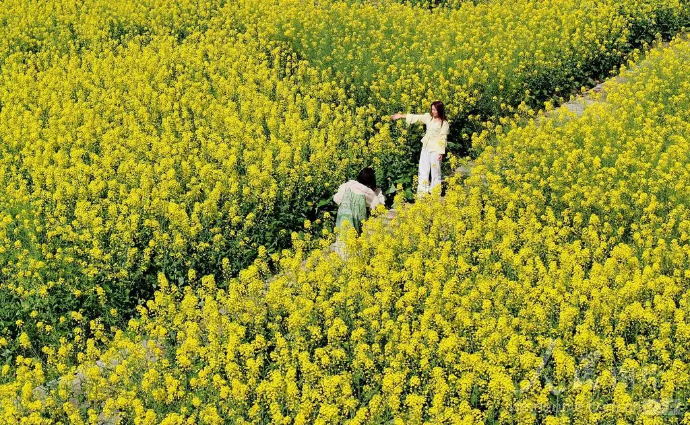
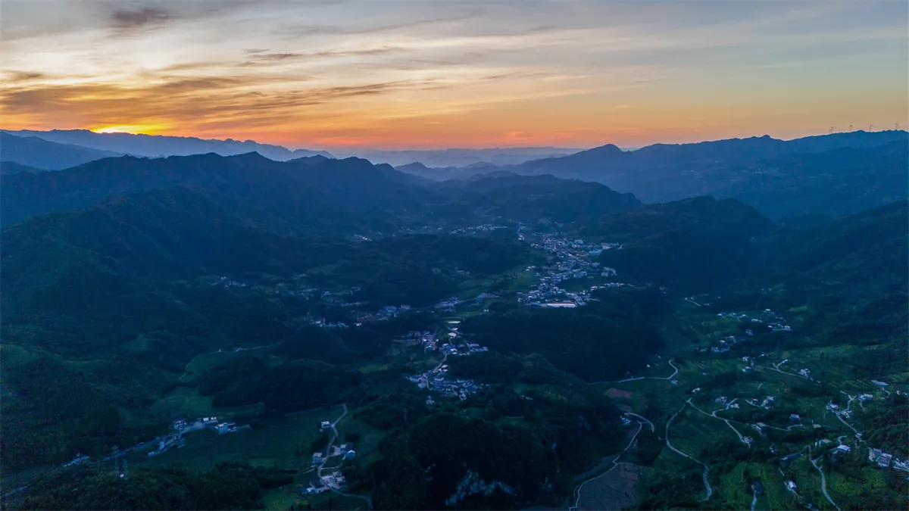
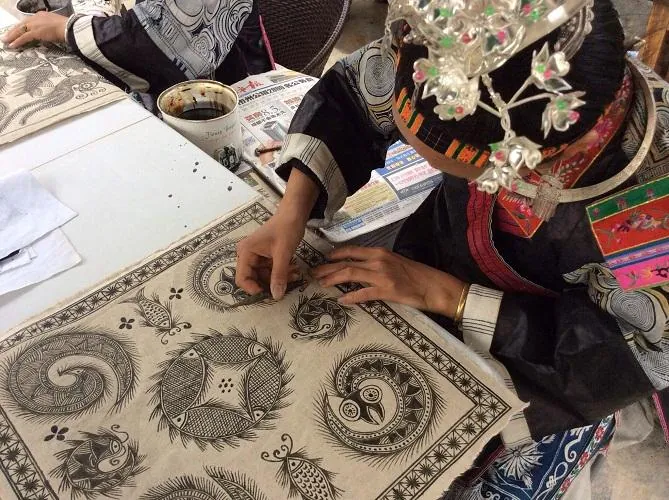
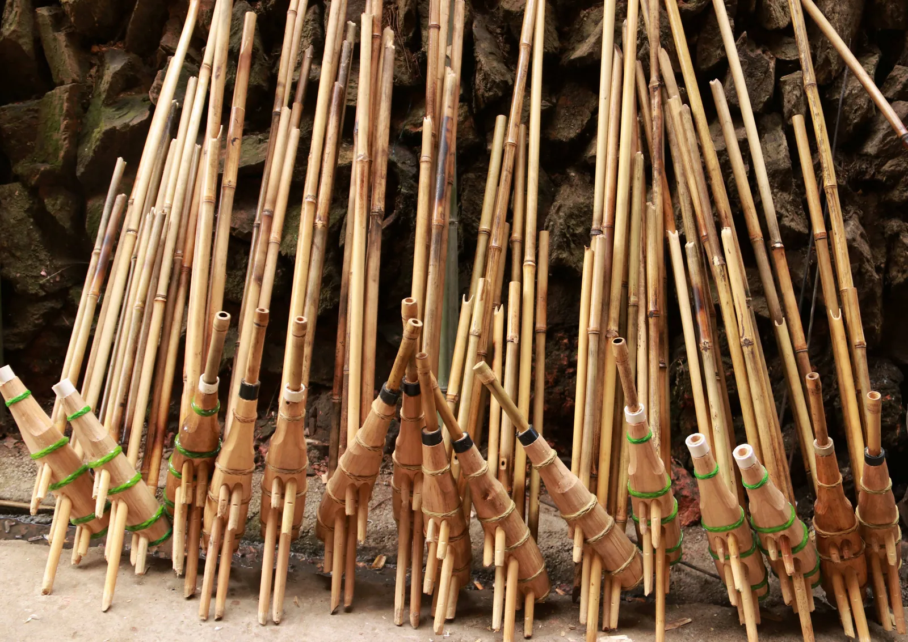
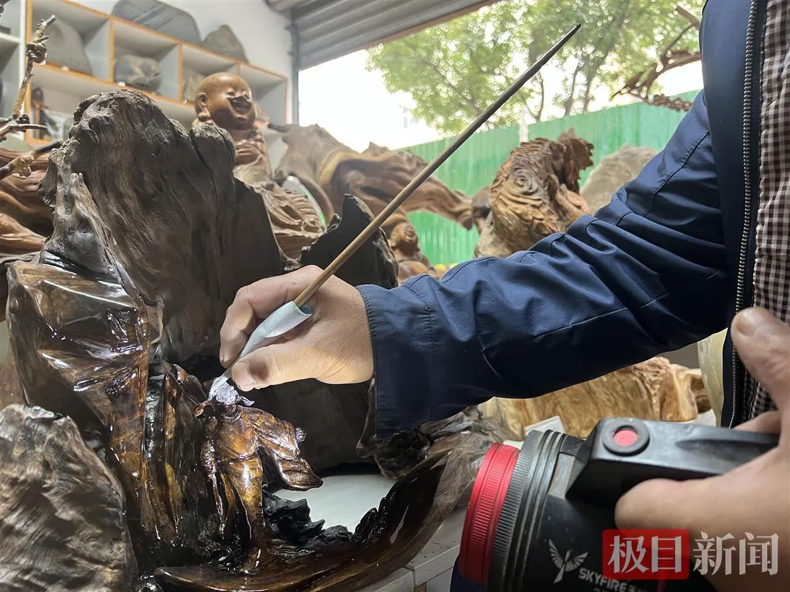

★
重走长征路 · 古蔺
四渡赤水 · 转战54天 · 一条赤水河的数字叙事
点击任意位置 · 进入体验
四渡赤水 · 转战54天 · 一条赤水河的数字叙事
点击任意位置 · 进入体验
四渡赤水 · 转战54天 · 一条赤水河的数字叙事
中央红军长征途中三进古蔺
在太平渡、二郎滩两度往返
以灵活机动的战略战术
写下了中国革命史上最精彩的一页
1935年1月至3月，中央红军在古蔺境内三进三出，转战54天，足迹遍及23个乡镇。 四渡赤水战役被誉为毛泽东军事指挥艺术的“得意之笔”。
红军以不足一个团的兵力，背水一战击溃敌军两个团，创造了长征以来以少胜多的经典战例。
红军在太平渡架设浮桥3座，渡河兵力1.2万人，完成二渡赤水，挥师东进重入贵州。
红军在双沙镇设立总司令部，驻扎7天，指挥了著名的四渡赤水战役，留下大量标语和文献。
⟵ 拖动时间轴 · 点击节点查看详情 ⟶
土城战斗后，中央红军由元厚、土城西渡赤水，进入川南古蔺，跳出敌人预设的包围圈。
红军来的时候，我才十七岁。他们借我家门板架浮桥，临走时还留了张字条，说‘日后一定归还’。 后来红军真的回来了，门板上刻满了印记。父亲说，这是红军讲信用的证据。
54 天里，红军三进古蔺、四渡赤水。抽到哪一天，就去看看那一天的他们走到了哪里。
1935 年 1 月 29 日至 3 月 23 日，中央红军在古蔺转战 54 天。抽一张属于你的「行军日签」，把它保存成纪念卡。
八十九载光阴流转，赤水河依旧奔涌向前。
今天的古蔺，以另一种方式续写着红色的传奇。
古蔺把红色基因融入了新时代的每一寸土地。 今天，它是一座没有围墙的红色博物馆，也是一座让人流连忘返的美食之城。

国家AAAA级旅游景区 · 没有围墙的红色博物馆
网红玻璃栈道 · 万只候鸟越冬地

国家AAAA级景区 · 苗寨民俗文化区
国家AAAA级景区 · 北纬28度最后的处女地

国家AAAA级景区 · 川黔渝生态旅游金三角
省级森林公园 · 丹霞地貌与湖光山色

连续16届菜花节 · 累计游客超30万人次

古蔺景点人气榜第1名 · 地质奇观+红色记忆
沉浸式茶旅廊道 · 茶马古道活态博物馆
国家地理标志 · 央视《舌尖上的中国2》推荐
国家地理标志 · 远销9个国家
国家地理标志 · 苗族“神仙草”
羊肉文化节吸引游客超15万人次
国家地理标志 · 老腊肉是古蔺年味
中国两大酱香白酒之一 · 郎酒庄园年接待20万人次
赤水河谷孕育 · 皮薄多汁酸甜适口
国家级非遗 · 传承人短视频播放超7000万次
省级非遗 · 2026年吸引约5万游客

县级非遗 · 带动1000余人居家就业
县级非遗 · 纹样精美，色彩丰富

县级非遗 · 可追溯至清朝陶氏一脉

传统美术 · 依形就势，古朴自然
石板街、老屋檐，赤水河边的千年古镇。点一下光点，听本地人讲讲这里。
点击地图上的地标，点亮红色遗址，了解历史故事，获取红色积分。 每点亮一个地标，积1分；集满5分，可解锁专属纪念海报与云认养资格。
用你的红色积分，认养一棵赤水河畔的甜橙树。 见证它从开花到结果，收获一份来自古蔺的甜蜜。
带着你点亮的红色足迹，生成一张专属纪念海报。 让红色基因，在数字时代继续传承。
如果你对“重走长征路 · 古蔺”这个作品有任何建议、想法或鼓励，欢迎留下你的留言。